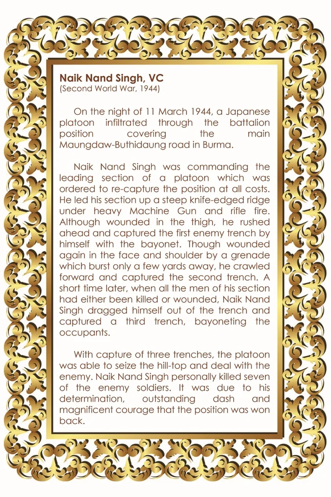

नाइक नंद सिंह, वीसी, एमवीसी
शीर्षक: Naik Nand Singh, VC, MVC
श्रेणी: हॉल ऑफ फेम
Award: विक्टोरिया क्रॉस
Era / Action: Second World War, 1944
नाइक नंद सिंह, वीसी, एमवीसी
उद्धरण (लिखित):
नायक नंद सिंह, वीसी (द्वितीय विश्व युद्ध, 1944) प्रथम मार्च 1944 की रात को, एक जापानी पलटन ने बर्मा में माउंगडॉ-बुथिदौंग रोड को कवर करने वाली बटालियन के माध्यम से घुसपैठ की। नायक नंद सिंह एक पलटन के अग्रणी हिस्से की कमान संभाल रहे थे, जिसे हर कीमत पर स्थिति पर फिर से कब्जा करने का आदेश दिया गया था। उन्होंने भारी मशीन गन और राइफल की गोलीबारी के बीच चाकू की धार वाली खड़ी पहाड़ी पर अपने सेक्शन का नेतृत्व किया। जांघ में चोट लगने के बावजूद, वह आगे बढ़े और संगीन से अकेले दुश्मन की पहली खाई पर कब्जा कर लिया। हालांकि कुछ ही गज की दूरी पर फटे ग्रेनेड से चेहरे और कंधे पर फिर से घाव हो गया, फिर भी वह रेंगते हुए आगे बढ़े और दूसरी खाई पर कब्जा कर लिया। थोड़े समय बाद, जब उनके अनुभाग के सभी लोग या तो मारे गए या घायल हो गए, नायक नंद सिंह ने खुद को खाई से बाहर खींच लिया और कब्जा करने वालों को संगीन करते हुए तीसरी खाई पर कब्जा कर लिया। तीन खाइयों पर कब्ज़ा करने के साथ, पलटन पहाड़ी की चोटी पर कब्ज़ा करने और दुश्मन से निपटने में सक्षम थी। नायक नंद सिंह ने व्यक्तिगत रूप से सात दुश्मन सैनिकों को मार गिराया। यह उनके दृढ़ संकल्प, उत्कृष्ट साहस और शानदार साहस के कारण था कि यह पद दोबारा हासिल किया गया।
ORIGINAL CITATION CARD

* Double-click either image above to view in fullscreen
🇬🇧 English
🇮🇳 हिन्दी
ੴ ਪੰਜਾਬੀ
मोबाइल पर खोलें
अपने फोन पर अंग्रेजी, हिंदी या पंजाबी में देखने के लिए इस QR कोड को स्कैन करें।